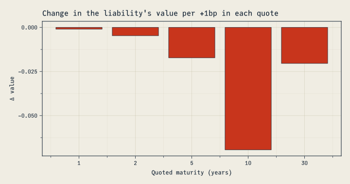
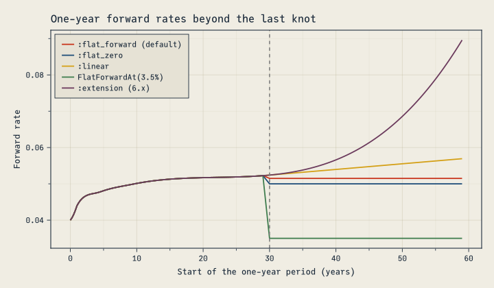
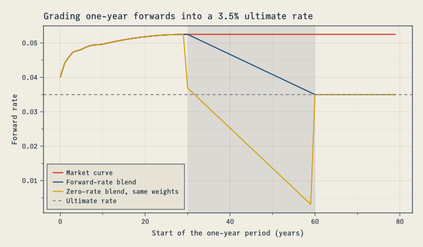
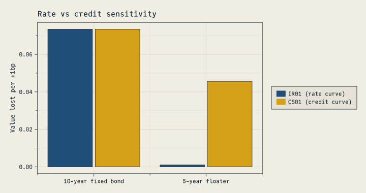
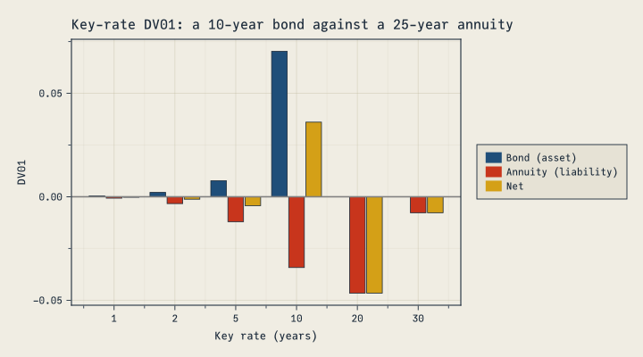
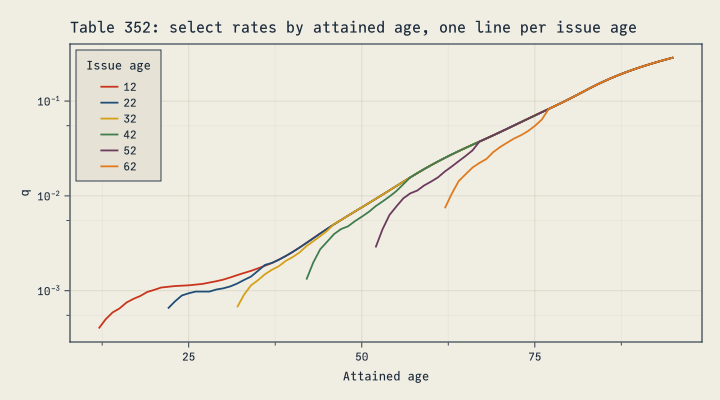
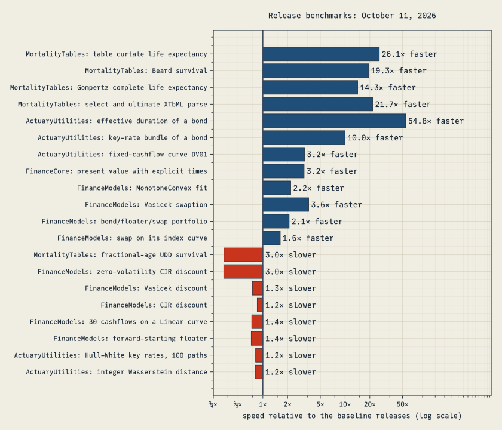

using FinanceModels, FinanceCore, ActuaryUtilities, MortalityTables, ForwardDiffFour major JuliaActuary releases improve curve calibration, interest-rate risk, valuation and mortality calculations. They add sensitivities through calibration and curve blending, simplify common calls, and fix errors that could produce plausible but incorrect results.
Some fixes change the numbers in existing models: portfolio values, the sign of DV01, zero rates beyond a curve’s last knot, and the age assignments of rates in eight SOA tables. The examples below explain those changes and show how to migrate.
FinanceModels 7.0, ActuaryUtilities 6.0, MortalityTables 3.0 and FinanceCore 3.0 are major releases with breaking changes; FinanceCore 3.0 includes the fixes of FinanceCore 2.8. Migration guides and release notes are linked under Upgrading.
- New capabilities
- Changes affecting existing models
- Performance and tradeoffs
- Upgrading
- AI assistance disclosure
The code blocks execute when the post is rendered. The Project.toml and Manifest.toml record the complete environment: FinanceCore 3.0.0, FinanceModels 7.0.0, ActuaryUtilities 6.0.0 and the MortalityTables 3.0.0 release commit. Reproduction instructions explain how to rebuild the examples and figures; Upgrading links the migration guides.
New capabilities
Sensitivities through calibration (FinanceModels)
You can now measure how a valuation changes when the market quotes used to calibrate its curve change. Spline fits support ForwardDiff differentiation through those quotes. Here is a 20-year level liability valued on a curve fitted to five zero-coupon yields:
tenors = [1.0, 2.0, 5.0, 10.0, 30.0]
rates = [0.040, 0.042, 0.045, 0.047, 0.050]
cfs, times = fill(10.0, 20), 1.0:20.0
liability(r) = pv(fit(Spline.Linear(), ZCBYield.(Continuous.(r), tenors)), cfs, times)
liability(rates)126.65633549555342Its gradient with respect to the five quotes:
∂pv = ForwardDiff.gradient(liability, rates)5-element Vector{Float64}:
-9.607894391523232
-47.14967754400351
-172.05932550264362
-693.8427485681342
-204.15905202464222These first-order sensitivities come from the fitted pricing equations through the implicit function theorem. They require no finite-difference bump size and preserve the ordinary fit’s value.
NoteThe implicit function theorem, in actuarial terms
A bond’s yield to maturity is defined implicitly, as the rate at which present value equals price. To see how the yield moves with the price, you don’t rerun the root-finder: differentiating PV(y) = P at the answer gives dy/dP = 1 / PV′(y), the familiar duration relationship. A curve fit is the same idea with many quotes at once. After fitting, FinanceModels differentiates the repricing equations and solves for the quote sensitivities, avoiding a separate refit for each bumped quote. Their accuracy depends on the fit’s tolerance and conditioning, which FinanceModels checks.
A central finite difference agrees closely:
bump(i, h) = rates .+ h .* (eachindex(rates) .== i)
fd = [(liability(bump(i, 1e-6)) - liability(bump(i, -1e-6))) / 2e-6 for i in eachindex(rates)]
maximum(abs, fd .- ∂pv)7.723339763288095e-6Plotting code
fig = Figure(size = (720, 380))
ax = Axis(fig[1, 1];
title = "Change in the liability's value per +1bp in each quote",
xlabel = "Quoted maturity (years)", ylabel = "Δ value",
xticks = (eachindex(tenors), string.(Int.(tenors))))
barplot!(ax, eachindex(tenors), ∂pv .* 1e-4)
fig
The liability’s cashflows end at 20 years, yet the 30-year quote matters: the linear curve between the 10- and 30-year knots depends on both.
Calibration sensitivities support loss fits with each spline interpolation method, linear bootstraps, and FX forward curves with a spline foreign curve. The fit must pass repricing and conditioning checks, and its derivative must exist. Higher-order calibration derivatives and derivatives with respect to quote maturities or cashflow times are not supported. The Sensitivities Through Calibration guide explains the restrictions, including interpolation kinks.
implied_quote (FinanceModels)
implied_quote(curve, family, maturity) returns the rate or price a curve implies for an instrument of the requested maturity. It also supports derivatives with respect to the curve:
curve = ZeroRateCurve(rates, tenors)
implied_quote(curve, CMTYield, 7.0)0.04626336826742401The family can be a quote constructor such as CMTYield, OISYield, ZCBYield or ZCBPrice, or a closure such as (r, t) -> ParYield(r, t; frequency = 1).
Extrapolation policies (FinanceModels)
Curves built on DataInterpolations (Spline.Linear(), Quadratic(), Cubic(), PCHIP(), Akima(), BSpline(d)) take an extrapolation policy for the long end:
:flat_forward(the default) holds the last discrete forward constant;:flat_zeroholds the last zero rate;:linearextends the zero rate linearly;Yield.FlatForwardAt(rate)holds a forward you choose;:extensioncontinues the last interpolation piece, as 6.x did.
c = ZeroRateCurve(rates, tenors, Spline.Cubic(); extrapolation = Yield.FlatForwardAt(Continuous(0.035)))
forward(c, 40.0, 60.0)Continuous(0.03500000000000001)Here are the one-year forwards of the same cubic curve under each policy, by the start of each year. The curves agree through the 30-year knot; one-year forwards begin to differ when their end date passes it. Beyond it, 6.x’s :extension keeps climbing:
Plotting code
policies = [
":flat_forward (default)" => :flat_forward,
":flat_zero" => :flat_zero,
":linear" => :linear,
"FlatForwardAt(3.5%)" => Yield.FlatForwardAt(Continuous(0.035)),
":extension (6.x)" => :extension,
]
starts = 0.0:0.25:59.0
fig = Figure(size = (720, 420))
ax = Axis(fig[1, 1]; title = "One-year forward rates beyond the last knot",
xlabel = "Start of the one-year period (years)", ylabel = "Forward rate")
for (label, policy) in policies
ci = ZeroRateCurve(rates, tenors, Spline.Cubic(); extrapolation = policy)
lines!(ax, starts, [rate(forward(ci, s, s + 1)) for s in starts]; label)
end
vlines!(ax, [30.0]; color = :gray, linestyle = :dash)
axislegend(ax; position = :lt)
fig
One interface for knot curves (FinanceModels)
Knot curves now share an interface for inspecting and updating their rates and tenors. ZeroRateCurve returns the concrete curve it builds: a Yield.MonotoneConvex for the default interpolation, a Yield.Spline otherwise. Use knot_rates (the knot zero rates, as Continuous rates) and knot_tenors to inspect it, and reconstruct(curve; rates, tenors, spline, extrapolation) to build a modified copy.
Use reconstruct when you need to stress or update an existing curve while keeping its interpolation and extrapolation settings. Rates alone do not describe the whole curve: changing the interpolation changes values between knots, and changing the tail affects values beyond the last knot. reconstruct preserves the settings you do not replace.
For example, here is a steepening stress on a curve delivered with cubic interpolation and its long end held at a 3.5% forward:
delivered = ZeroRateCurve(rates, tenors, Spline.Cubic(); extrapolation = Yield.FlatForwardAt(Continuous(0.035)))
steepener = Continuous.([0.0, 0.001, 0.0025, 0.004, 0.005]) # +0bp at 1 year, rising to +50bp at 30 years
stressed = reconstruct(delivered; rates = knot_rates(delivered) .+ steepener)ZeroRateCurve([0.04, 0.043000000000000003, 0.0475, 0.051000000000000004, 0.055], [1.0, 2.0, 5.0, 10.0, 30.0], FinanceModels.Spline.PolynomialSpline(3); extrapolation = Yield.FlatForwardAt(Continuous(0.035)))The stressed curve prints as a call that rebuilds it, including its interpolation and tail settings. Knot curves also compare by value, so stressed == delivered checks whether their contents match. Here the higher rates lower the liability’s value:
(delivered = pv(delivered, cfs, times), stressed = pv(stressed, cfs, times))(delivered = 126.2883461617498, stressed = 121.72597237984294)reconstruct also accepts dual numbers, so sensitivities to a curve’s own knot rates are a one-liner. These are the exposures to hedge when your inputs are the knots themselves. Here they are for the monotone convex curve from earlier:
ForwardDiff.gradient(z -> pv(reconstruct(curve; rates = z), cfs, times), rate.(knot_rates(curve)))5-element Vector{Float64}:
-7.419928800250587
-33.95067280823388
-67.64308450097408
-820.0414473970203
-193.95053909993328On a cubic spline like delivered, the same sensitivities swing between positive and negative because moving one knot reshapes the whole curve. Local interpolants such as Spline.Linear() or the monotone convex default make those exposures easier to interpret.
Blending curves (FinanceModels)
Yield.Blend combines curves with weights that sum to 1. The space you choose says what is averaged:
Yield.DiscountFactors()averages discount factors,D(t) = Σ wᵢ Dᵢ(t). This is a mixture of scenarios: with constant weights, its present value is the weighted average of the curves’ present values.Yield.ZeroRates()averages zero rates. With constant weights it is the same curve asw * a + (1 - w) * b.Yield.ForwardRates(period)averages forward rates period by period, reading a weight that varies with tenor at the start of each period.
Yield.Blend(a, b, w, space) weights a by w and b by 1 - w, and Yield.Blend(curves, weights, space) takes any number of curves. A weight is a number or a function of tenor.
Grading a market curve into an ultimate rate is a forward-rate blend. Here the monotone convex curve from earlier applies to 30 years. Its annual forwards then move linearly to a 3.5% ultimate rate at 60 years, and the ultimate rate applies after that:
ultimate = Yield.Constant(Continuous(0.035))
grade(t) = clamp((60 - t) / 30, 0, 1) # the market curve's weight
graded = Yield.Blend(curve, ultimate, grade, Yield.ForwardRates(1.0))
[rate(forward(graded, s, s + 1)) for s in (30, 45, 60)]3-element Vector{Float64}:
0.05250000000000021
0.043749999999999845
0.03500000000000014The grading starts after the first example’s liability ends, at 20 years, so the liability’s value is unchanged:
(market = pv(curve, cfs, times), graded = pv(graded, cfs, times))(market = 126.39304481426217, graded = 126.39304481426217)Applying the same weights to zero rates gives a different curve. A continuously compounded zero rate averages forwards from time 0, so changing its weight with tenor also changes the contribution of all those earlier forwards. This adds w′(t) (Lₐ(t) − L_b(t)) to the instantaneous forward, where L = −log D. In this example, the extra term pulls forward rates below both input curves:
zero_graded = Yield.Blend(curve, ultimate, grade, Yield.ZeroRates())
[rate(forward(zero_graded, s, s + 1)) for s in (30, 45, 59)]3-element Vector{Float64}:
0.03691666666666693
0.019416666666666416
0.0030833333333331048Plotting code
years = 0:79
fig = Figure(size = (720, 420))
ax = Axis(fig[1, 1]; title = "Grading one-year forwards into a 3.5% ultimate rate",
xlabel = "Start of the one-year period (years)", ylabel = "Forward rate")
vspan!(ax, [30.0], [60.0]; color = (CF_INK_SOFT, 0.12))
for (label, c) in ["Market curve" => curve, "Forward-rate blend" => graded, "Zero-rate blend, same weights" => zero_graded]
lines!(ax, years, [rate(forward(c, s, s + 1)) for s in years]; label)
end
hlines!(ax, [0.035]; color = :gray, linestyle = :dash, label = "Ultimate rate")
axislegend(ax; position = :lb)
fig
A discount-factor blend is a mixture. A 50/50 mixture of a 2% and a 6% scenario values cashflows at the average of the two present values. That is more than discounting at the average rate, 4%:
low, high = Yield.Constant(Continuous(0.02)), Yield.Constant(Continuous(0.06))
mixture = Yield.Blend(low, high, 0.5, Yield.DiscountFactors())
average = Yield.Blend(low, high, 0.5, Yield.ZeroRates())
(mixture = pv(mixture, cfs, times),
mean_of_pvs = (pv(low, cfs, times) + pv(high, cfs, times)) / 2,
average_rate = pv(average, cfs, times))(mixture = 138.10280622116062, mean_of_pvs = 138.1028062211606, average_rate = 134.93275900301012)The mixture’s zero rate starts near 4% and falls toward the low scenario’s 2%, because the high scenario’s discount factors become negligible at long tenors:
[rate(zero(mixture, t)) for t in (1, 10, 30, 100, 1000)]5-element Vector{Float64}:
0.03980001333191128
0.03801319281599927
0.0343288237740638
0.026749972526421355
0.020693147180559944For n simulated short-rate paths, Yield.Blend(collect(paths), fill(1 / n, n), Yield.DiscountFactors()) gives the sample mean of their discount factors. It therefore gives the mean present value of cashflows that do not vary by scenario.
Weights must sum to 1, and discount-factor weights must lie in [0, 1]. The blending guide covers each space, including how to rebase a mixture to a later date.
Parallel risk without tenor grids (ActuaryUtilities)
ActuaryUtilities 6 measures a parallel rate shift directly. You supply a tenor grid only when you want to split the result into key-rate exposures. The same interface covers fixed cashflows, contracts and valuation callbacks, including valuations that use separate rate and credit curves.
sensitivities(valuation, curve) returns value, duration and DV01 together. Add SecondOrder() for convexity and the new dollar convexity. Dollar convexity is the second derivative of value before normalization, so it remains defined at zero value and adds across positions.
NoteWhat is a valuation callback?
A valuation callback is a function that takes a curve or rate and returns a value. ActuaryUtilities uses ForwardDiff to differentiate your entire calculation with respect to rate shifts, including any cashflows that depend on rates.
Here a five-year floater pays the one-year forward rate plus 1%. Its coupons reset on the curve the callback receives. Treating today’s projected coupons as fixed cashflows misses those resets and gives a bond-like duration:
frn_value(c) = sum(1:5) do t
coupon = 100 * (1 / discount(c, t - 1, t) - 1 + 0.01) # resets on the shifted curve
(coupon + (t == 5 ? 100 : 0)) * discount(c, t)
end
frozen = [100 * (1 / discount(curve, t - 1, t) - 1 + 0.01) + (t == 5 ? 100 : 0) for t in 1:5]
(callback = duration(frn_value, curve), frozen = duration(curve, frozen, 1:5))(callback = 0.12239237945330604, frozen = 4.524908001390014)With one curve for projection and discounting, only the fixed 1% margin has rate risk, so the floater’s duration is small. The callback result is its effective duration; freezing the coupons gives its spread duration. The equivalent contract example in One call shape for every sensitivity lets ActuaryUtilities perform the valuation for you.
The callback comes first. It can be a named function, an anonymous function, a callable struct, or a do block, which Julia passes as the first argument: duration(DV01(), curve) do c ... end. It must accept ForwardDiff’s dual numbers, so avoid converting intermediate values to Float64. A two-curve callback takes both curves, as in (base, credit) -> …; a named-curve callback takes their NamedTuple.
Take a 10-year 4.5% bond held against a 25-year annuity liability:
bond, bond_times = [fill(4.5, 9); 104.5], 1.0:10.0
annuity, annuity_times = fill(-7.0, 25), 1.0:25.0
duration(DV01(), curve) do c
pv(c, bond, bond_times) + pv(c, annuity, annuity_times)
end-0.023933625584342588Rate and credit sensitivities differ only when a valuation uses the two curves differently. Compare the bond, whose fixed cashflows are discounted at rate + credit, with a five-year floater paying the one-year forward rate plus 150bp. The floater’s coupons reset on the rate curve, while every payment is discounted at rate + credit:
credit = Yield.Constant(Continuous(0.01))
margin = 0.015
bond_value(rate, credit) = pv(rate + credit, bond, bond_times)
floater_value(rate, credit) = sum(1:5) do t
coupon = 100 * (1 / discount(rate, t - 1, t) - 1 + margin) # resets on the rate curve
(coupon + (t == 5 ? 100 : 0)) * discount(rate + credit, t) # discounted at rate + credit
end
(bond = (ir01 = duration(bond_value, IR01(), curve, credit), cs01 = duration(bond_value, CS01(), curve, credit)),
floater = (ir01 = duration(floater_value, IR01(), curve, credit), cs01 = duration(floater_value, CS01(), curve, credit)))(bond = (ir01 = 0.0734321958187586, cs01 = 0.0734321958187586), floater = (ir01 = 0.0010003949893000992, cs01 = 0.04564592106665357))The floater’s IR01 is small: a rate rise raises its projected coupons by almost as much as it lowers their discounted value. Its CS01 is close to that of a five-year bond, because the credit curve discounts every payment. The two-curve convexity blocks show the same split:
(bond = convexity(bond_value, curve, credit), floater = convexity(floater_value, curve, credit))(bond = (base = (base = 75.16521133538198, credit = 75.16521133538198), credit = (base = 75.16521133538198, credit = 75.16521133538198)), floater = (base = (base = 0.403859931498768, credit = 8.68950257849735), credit = (base = 8.68950257849735, credit = 21.355741885569508)))Plotting code
instruments = ["10-year fixed bond", "5-year floater"]
ir01s = [duration(v, IR01(), curve, credit) for v in (bond_value, floater_value)]
cs01s = [duration(v, CS01(), curve, credit) for v in (bond_value, floater_value)]
fig = Figure(size = (720, 380))
ax = Axis(fig[1, 1]; title = "Rate vs credit sensitivity",
ylabel = "Value lost per +1bp", xticks = (1:2, instruments))
colors = [CF_BLUE, CF_AMBER]
barplot!(ax, [1, 2, 1, 2], [ir01s; cs01s]; dodge = [1, 1, 2, 2], color = colors[[1, 1, 2, 2]])
Legend(fig[1, 2], [PolyElement(polycolor = c) for c in colors], ["IR01 (rate curve)", "CS01 (credit curve)"])
fig
NoteFixed cashflows need only the combined curve
For fixed cashflows discounted at base + credit, a one-basis-point continuous-zero shift in either curve has the same effect. IR01, CS01 and combined-curve DV01 are equal, as are the four convexity blocks. The redundant fixed-cashflow two-curve forms are removed: use duration(DV01(), base + credit, cfs, times) and convexity(base + credit, cfs, times).
Key-rate results still use a grid, now given as a KeyRates(tenors) marker before the curve argument. These sensitivities differentiate prescribed changes to the curve’s continuous zero rates; calibration sensitivities instead change market quotes and refit the curve. Dollar measures retain the position’s sign:
grid = [1.0, 2.0, 5.0, 10.0, 20.0, 30.0]
asset_kr = duration(DV01(), KeyRates(grid), curve, bond, bond_times)
liability_kr = duration(DV01(), KeyRates(grid), curve, annuity, annuity_times)6-element Vector{Float64}:
-0.0006725526074066262
-0.003298407685321483
-0.012033880313419369
-0.03419136433575766
-0.04656535699752384
-0.0077159551285951936Plotting code
fig = Figure(size = (720, 400))
ax = Axis(fig[1, 1]; title = "Key-rate DV01: a 10-year bond against a 25-year annuity",
xlabel = "Key rate (years)", ylabel = "DV01",
xticks = (eachindex(grid), string.(Int.(grid))))
n = length(grid)
xs = repeat(eachindex(grid), 3)
group = repeat(1:3; inner = n)
colors = [CF_BLUE, CF_RED, CF_AMBER]
barplot!(ax, xs, [asset_kr; liability_kr; asset_kr .+ liability_kr]; dodge = group, color = colors[group])
elements = [PolyElement(polycolor = c) for c in colors]
Legend(fig[1, 2], elements, ["Bond (asset)", "Annuity (liability)", "Net"])
hlines!(ax, [0.0]; color = :gray)
fig
Valuation callbacks can be callable structs, and the parallel measures accept cashflow amounts as arrays, tuples or finite generators.
One call shape for every sensitivity (ActuaryUtilities)
Arguments now follow one order: an optional valuation callback, derivative-order and measure markers, the curve or curves, then cashflows or a contract. Contract calls take the index curve through the keyword index, which defaults to the discount curve. In the table, square brackets mark optional arguments:
| Measure | Fixed cashflows | Valuation callback | Contract or portfolio |
|---|---|---|---|
| duration | duration(curve, cfs, times) |
duration(valuation, curve) |
duration(discount, contract; index) |
| DV01 | duration(DV01(), curve, cfs, times) |
duration(valuation, DV01(), curve) |
duration(DV01(), discount, contract; index) |
| convexity | convexity(curve, cfs, times) |
convexity(valuation, curve) |
convexity(discount, contract; index) |
| dollar convexity | convexity(DollarConvexity(), curve, cfs, times) |
convexity(valuation, DollarConvexity(), curve) |
convexity(DollarConvexity(), discount, contract; index) |
| key rates | duration(KeyRates(t), curve, cfs, times) |
duration(valuation, KeyRates(t), curve) |
duration(KeyRates(t), discount, contract; index) |
| all at once | sensitivities([SecondOrder(),] curve, cfs, times) |
sensitivities(valuation, [SecondOrder(),] curve) |
sensitivities([SecondOrder(),] discount, contract; index) |
sensitivities returns value, duration and dv01. FirstOrder() is the default; pass SecondOrder() to add convexity and dollar_convexity. The result shape follows the requested shifts:
| Requested risk | Derivative fields |
|---|---|
| One parallel curve shift | Numbers |
KeyRates(tenors) |
Duration and DV01 vectors; convexity matrices |
| Several curves | Fields keyed by curve role, with convexity blocks such as base.credit |
value is always a number. Dollar convexity has no basis-point scaling: for one parallel shift of b basis points, the second-order approximation is ΔV ≈ -dv01 * b + 0.5 * dollar_convexity * (b / 10_000)^2.
Second-order results require second derivatives throughout the valuation. Calibration sensitivities and the Hull–White swaption critical-rate calculation support first derivatives only, so requesting SecondOrder() for those valuations throws.
For a floater, the discount role measures spread risk and the index role measures coupon resets. Effective duration is their sum:
frn = Bond.Floating(0.01, Periodic(1), 5.0, "OIS")
risk = sensitivities(curve, frn)
(risk.duration, effective = risk.duration.discount + risk.duration.index)(duration = (discount = 4.524908001390014, index = -4.4025156219367085), effective = 0.12239237945330572)For risk to market quotes rather than prescribed curve shifts, pass a named tuple of input vectors to sensitivities(valuation, inputs). The callback builds the curves and values the position, so the derivatives include supported calibration steps.
The upgrade guide maps the changed 5.x calls and result fields to their replacements.
One mortality interface for tables and laws (MortalityTables)
cumhazardis defined for every parametric law: in closed form where MortalityTables implements one (Makeham, Gompertz, Weibull, Kannisto and others), and by numerical integration otherwise, as for Beard;survivalfollows from it.- Parametric models accept a
DeathDistributioninsurvival,decrementandcomplete_life_expectancyfor compatibility with table-based calls. They ignore that argument: the law already specifies mortality between integer ages. UltimateMortalityaccepts anyAbstractVector(ranges, views, vectors withmissing) and wraps it without copying.- Loading a table from CSV is a package extension, activated by
using CSV.
m = MortalityTables.Beard()
cumhazard(m, 40, 50), survival(m, 40, 50)(4.127968753618562, 0.01611558031314834)Age-basis conversions (MortalityTables)
age_nearest_to_age_last and age_last_to_age_nearest convert ultimate rates between age-nearest-birthday (ANB) and age-last-birthday (ALB) bases, assuming deaths are uniform over each year of age. The formula comes from the 1981 Transactions of the Society of Actuaries paper that published the 1980 CSO and CET tables on an age-last-birthday basis. The result keeps the input’s ages and number type, and the last rate must be one. Converting the 1980 CSO Male ANB table reproduces the published ALB table to its five-decimal rounding:
anb = MortalityTables.table(42).ultimate # 1980 CSO Male, ANB
alb = MortalityTables.table(41).ultimate # 1980 CSO Male, ALB
maximum(abs, age_nearest_to_age_last(anb) .- alb)4.9981493152465636e-6Thanks to @aminemanai2003 for this contribution (#154).
IRR derivatives of every order (FinanceCore 2.8)
An IRR is the rate y at which the cashflows’ present value is zero: Σ aₖ (1 + y)^(-tₖ) = 0. Differentiating that equation at the root gives ∂y/∂aₖ = -(∂PV/∂aₖ) / (∂PV/∂y), with similar expressions for payment times and higher orders. This uses the same implicit-function approach as sensitivities through calibration.
irr supports gradients, Hessians and higher-order derivatives with respect to amounts and times, whichever stage of the solver finds the root. Before FinanceCore 2.8, roots found by the fallback stage silently had zero derivatives. Differentiating at a repeated root throws because the sensitivity is undefined there.
For an outlay of 100 repaid with 110 a year later, the IRR is 10%: y = -a₂/a₁ - 1. Paying 1 less up front raises it by 1.1 points, and receiving 1 more at the end raises it by 1 point:
ForwardDiff.gradient(a -> rate(irr(a, [0.0, 1.0])), [-100.0, 110.0])2-element Vector{Float64}:
0.010999999999999998
0.009999999999999995The Hessian shows how those sensitivities change; the IRR is linear in the repayment, so that entry is zero up to rounding. Delaying the repayment lowers the IRR by about 10.5 points per year of delay, -1.1 ln(1.1):
(hessian = ForwardDiff.hessian(a -> rate(irr(a, [0.0, 1.0])), [-100.0, 110.0]),
delay = ForwardDiff.derivative(t -> rate(irr([-100.0, 110.0], [0.0, t])), 1.0))(hessian = [0.00021999999999999998 9.999999999999995e-5; 9.999999999999994e-5 -4.0657581468206416e-20], delay = -0.1048411977847573)Changes affecting existing models
These changes can alter valuations, risk measures or accepted inputs. Check the assumptions and conventions your existing models use when upgrading.
FinanceModels
- Portfolios and composites are worth the sum of their parts. In 6.x, a contract’s position in a collection was passed as its valuation time. A 3-year zero-coupon bond at a continuous 3% was worth 0.9139 alone but 0.9418 inside
[bond]; changing the order of contracts changed the result. Collections andComposites now sum their members’ values, including closed-form options, caps, floors and swaptions. This applies to contracts with their own payment times and a common reporting currency, up to rounding:
bs_model = Equity.BlackScholesMerton(0.01, 0.02, 0.15)
call_1y = Option.EuroCall(CommonEquity(), 1.0, 1.0)
put_1y = Option.EuroPut(CommonEquity(), 1.0, 1.0)
(composite = pv(bs_model, Composite(call_1y, put_1y)),
portfolio = pv(bs_model, [put_1y, call_1y]),
sum = pv(bs_model, call_1y) + pv(bs_model, put_1y))(composite = 0.11805304448046065, portfolio = 0.11805304448046065, sum = 0.11805304448046065)- Valuation contexts supply discounting and projection models. Replace
Projection(contract; index)with a context such asModels(discount; index), then callpresent_value(ctx, contract). UseModels(model, store)when contracts need several named models.Models(curve)uses the same curve for discounting and index lookups. The example below shows the distinction and the extension points for custom contracts.
NoteWhich model does each part of a valuation use?
A fixed-rate bond needs a curve to discount its payments. A floater also needs an index curve to set its coupons. A valuation context supplies both:
discount_curve = Yield.Constant(Continuous(0.03))
index_curve = Yield.Constant(Continuous(0.04))
# Unit principal, annual coupons, 1% margin over the SOFR index
floater = Bond.Floating(Periodic(0.01, 1), Periodic(1), 5.0, :SOFR)
ctx = Models(discount_curve; index = index_curve)
(value = pv(ctx, floater), cashflows = collect(Projection(floater, ctx)))(value = 1.0931047541091208, cashflows = Cashflow{Float64, Float64}[Cashflow{Float64, Float64}(0.050810774192388226, 1.0), Cashflow{Float64, Float64}(0.050810774192388226, 2.0), Cashflow{Float64, Float64}(0.05081077419238822, 3.0), Cashflow{Float64, Float64}(0.05081077419238823, 4.0), Cashflow{Float64, Float64}(1.0508107741923882, 5.0)])The floater projects its coupons from index_curve, and pv discounts the payments on discount_curve. Projection shows the payments before discounting.
Contracts get their inputs through three operations:
| Operation | What it supplies under Models(model, store) |
|---|---|
discount(ctx, t) or discount(ctx, from, to) |
Discount factors from model |
ctx[key] |
The model stored under that key |
valuation_model(ctx) |
model itself, for a model-specific pricing formula |
Models(curve) uses one curve for discounting and every index lookup. Models(model; index = curve) returns curve for every key. Use an explicit store when different keys need different models:
term_curve = Yield.Constant(Continuous(0.045))
keyed = Models(discount_curve, (; SOFR = index_curve, TERM_SOFR = term_curve))
term_floater = Bond.Floating(Periodic(0.01, 1), Periodic(1), 5.0, :TERM_SOFR)
pv(keyed, [floater, term_floater])2.2100712566101404Each floater reads its own index, and both use the same discount curve. With an explicit store, a missing or misspelled key throws instead of silently using another curve.
The first model can also supply a closed-form price. An equity option uses the Black–Scholes model carried by its context:
bsm = Equity.BlackScholesMerton(0.03, 0.01, 0.20)
option = Option.EuroCall(CommonEquity(), 1.0, 1.0)
(plain = pv(bsm, option), bundled = pv(Models(bsm; index = index_curve), option))(plain = 0.08827321225352117, bundled = 0.08827321225352117)The values agree because the option uses the Black–Scholes model and reads nothing from the store. A contract that reads ctx[key] changes value when the stored model changes.
For a custom closed form, define FinanceCore.present_value(ctx, c::MyContract) with the operations above. If its formula depends on the pricing model’s type, pass valuation_model(ctx) to a method of FinanceModels.closed_form(model, contract).
Portfolios and Composites can include contracts valued only by closed forms, provided their values share a reporting currency. Forward, FX.Converted and transducers act on cashflow streams, so their underlying contracts must support projection.
- One reporting currency per FX context.
FX.Forwards, including insideModels, reports in its quote currency. Contracts with currency information are checked against it, preventing a base-currency value from being added to quote-currency values. Value a base-currencyFX.BasisSwapLegon its own currency’s curve or convert it withFX.Converted. A converted leg must pay in the FX pair’s base currency; converting anFX.Forwardthis way is unsupported. Reporting currency and collateral assumptions remain separate: converting a present value at spot does not change the collateral assumptions encoded in the curves. - No valuation-time argument.
present_value(model, contract, t)is removed: the third argument meant payment times for numbers, nothing for aCashflow, and a valuation time for contracts.pv(model, contract)now also accumulates cashflows before time 0, which 6.x’s default valuation time of 0 dropped. On a deterministic curve, value the cashflows at or aftertas oftby discounting each one over[t, T]. The boundary is explicit in your code (inclusive here, as in 6.x):
asof(model, contract, t) = sum(cf.amount * discount(model, t, cf.time)
for cf in collect(Projection(contract, model)) if cf.time >= t; init = zero(discount(model, t, t)))
asof(Yield.Constant(Continuous(0.04)), Bond.Fixed(0.05, Periodic(1), 5), 2.0)1.0754617478299633Don’t accumulate a time-0 value instead. accumulation(model, t) * pv(model, contract) also counts the cashflows before t. If the time-0 present value includes only cashflows at or after t, the product agrees in exact arithmetic, but where the accumulation overflows and the time-0 value underflows it is Inf * 0 = NaN.
Transducers over contracts apply in the order written. Inside a projection,
bond |> double |> add1projected as [2.1, 4.1] instead of [1.1, 3.1], so its present value was wrong whilecollectwas right. Stateful and early-terminating transducers (Take,Scan) now also work inside a projection, a portfolio or aComposite; they threw.Rate results carry their convention.
knot_rates,Yield.instantaneous_forwardandshort_ratereturnContinuousrates. They were bare continuous numbers, which FinanceCore reads as annual effective, so passing one on, as inYield.Constant(instantaneous_forward(c, 5)), silently used the wrong rate. Userate(x)for the number, for example to seed a ForwardDiff gradient. Coupons, margins and interest-rate strikes also accept aPeriodicrate of the contract’s frequency, and other rate inputs accept aRatein any convention; numbers keep their meaning.Bootstrapping requires linear interpolation. With a smoother interpolant, adding a knot reshapes earlier segments, so bootstrapped coupon quotes could stop repricing, with residuals up to 0.40% of par.
Fit.Bootstrap()now accepts onlySpline.Linear()and checks every quote on the returned curve. For a smooth curve, use the default least-squares fit, such asfit(Spline.Cubic(), quotes). This bootstrap call now throws:
fit(Spline.Cubic(), CMTYield.(rates, tenors), Fit.Bootstrap())ArgumentError: Fit.Bootstrap does not support FinanceModels.Spline.PolynomialSpline(3): adding a knot would change earlier curve segments and reprice earlier quotes. Use Spline.Linear(), or fit this strategy across all quotes with Fit.Loss(x -> x^2). Stacktrace: [1] fit(mod0::FinanceModels.Spline.PolynomialSpline, quotes::Vector{Quote{Float64, FinanceModels.Bond.Fixed{Periodic, Float64, Float64}}}, method::FinanceModels.Fit.Bootstrap; extrapolation::Symbol) @ FinanceModels ~/.julia/packages/FinanceModels/quEQy/src/fit.jl:519 [2] fit(mod0::FinanceModels.Spline.PolynomialSpline, quotes::Vector{Quote{Float64, FinanceModels.Bond.Fixed{Periodic, Float64, Float64}}}, method::FinanceModels.Fit.Bootstrap) @ FinanceModels ~/.julia/packages/FinanceModels/quEQy/src/fit.jl:515 [3] top-level scope @ /private/tmp/juliaactuary-fall-finalization/posts/2026-fall-releases/index.qmd:528
- An explicit long-end assumption. Continuing the last interpolation polynomial past the last knot let that polynomial drive the long-end forwards, as in the figure above. The
:flat_forwarddefault changes zero rates and present values beyond the last knot of DataInterpolations curves;Spline.MonotoneConvex(), theZeroRateCurvedefault, is unchanged. For a linear bootstrap, the 30-year zero rate under the new default and under 6.x’s:extension:
quotes = ZCBYield.([0.02, 0.025, 0.031, 0.036], [1, 2, 5, 10])
zero(fit(Spline.Linear(), quotes, Fit.Bootstrap()), 30.0),
zero(fit(Spline.Linear(), quotes, Fit.Bootstrap(); extrapolation = :extension), 30.0)(Continuous(0.03859243637227028), Continuous(0.054718899047165113))- Flat before the first knot. DataInterpolations curves hold the first knot’s zero rate between time 0 and the first knot, so their zero rates before it change; MonotoneConvex curves don’t. Bootstrapped values are unchanged, but the extra
t = 0knot is gone, so a curve has exactly one knot rate per quote. - Curve arithmetic is factor arithmetic.
curve1 + curve2andcurve1 - curve2multiply and divide discount factors. Those are the only supportedCompositeYieldoperations. For a pointwise change to one curve’s zero rates, use aTenorShift, writtencurve + ((z, t) -> ...). This one floors the zero rate at 0:
negative = ZeroRateCurve([-0.01, 0.0, 0.01], [1.0, 2.0, 5.0])
floored = negative + ((z, t) -> max(z, Continuous(0.0)))
zero(negative, 1.0), zero(floored, 1.0)(Continuous(-0.01), Continuous(0.0))- Explicit quote conventions.
OISYieldbuilds annual-pay swaps beyond one year; it previously used quarterly payments.ParSwapYieldandInterestRateSwaprequire an explicitfrequency.ParYieldthrows when an explicitfrequencyconflicts with aPeriodicrate’s own compounding; the keyword used to be ignored. Everyfrequencytakes an integer or aPeriodic. - Failed fits throw. An optimizer fit that doesn’t converge throws a
FitConvergenceError; previously it returned the unfitted starting model. Optimizer-backed fits now acceptsolve_kwargs, passed to the solver, such as(; maxiters = 10_000, g_tol = 1e-12). Here one iteration is too few:
fit(Yield.NelsonSiegel(), CMTYield.(rates, tenors); solve_kwargs = (; maxiters = 1))FitConvergenceError: model fitting did not converge (optimizer return code Failure) Stacktrace: [1] __minimize(::Val{1}, loss::FinanceModels.var"#loss#78"{FinanceModels.Fit.Loss{FinanceModels.var"#__default_loss##0#__default_loss##1"}, FinanceModels.var"#build#77"{AccessibleModels.AccessibleModel{Nothing, FinanceModels.Yield.NelsonSiegel{Float64}, Tuple{Accessors.PropertyLens{:τ₁}, Accessors.PropertyLens{:β₀}, Accessors.PropertyLens{:β₁}, Accessors.PropertyLens{:β₂}}, NTuple{4, Distributions.Uniform{Float64}}, Distributions.ProductDistribution{1, 0, NTuple{4, Distributions.Uniform{Float64}}, Distributions.Continuous, Float64}}}}, x0::Vector{Float64}, quotes::Vector{Quote{Float64, FinanceModels.Bond.Fixed{Periodic, Float64, Float64}}}, optimizer::Optim.LBFGS{Nothing, LineSearches.InitialStatic{Float64}, LineSearches.HagerZhang{Float64, Base.RefValue{Bool}}, Returns{Nothing}}, solve_kwargs::@NamedTuple{maxiters::Int64}; lb::Vector{Float64}, ub::Vector{Float64}, who::String, hint::String) @ FinanceModels ~/.julia/packages/FinanceModels/quEQy/src/fit.jl:240 [2] __minimize(loss::Function, x0::Vector{Float64}, quotes::Vector{Quote{Float64, FinanceModels.Bond.Fixed{Periodic, Float64, Float64}}}, optimizer::Optim.LBFGS{Nothing, LineSearches.InitialStatic{Float64}, LineSearches.HagerZhang{Float64, Base.RefValue{Bool}}, Returns{Nothing}}, solve_kwargs::@NamedTuple{maxiters::Int64}; lb::Vector{Float64}, ub::Vector{Float64}, who::String, hint::String) @ FinanceModels ~/.julia/packages/FinanceModels/quEQy/src/fit.jl:227 [3] fit(mod0::FinanceModels.Yield.NelsonSiegel{Float64}, quotes::Vector{Quote{Float64, FinanceModels.Bond.Fixed{Periodic, Float64, Float64}}}, method::FinanceModels.Fit.Loss{FinanceModels.var"#__default_loss##0#__default_loss##1"}; variables::Tuple{Pair{Accessors.PropertyLens{:τ₁}, IntervalSets.ClosedInterval{Float64}}, Pair{Accessors.PropertyLens{:β₀}, IntervalSets.ClosedInterval{Float64}}, Pair{Accessors.PropertyLens{:β₁}, IntervalSets.ClosedInterval{Float64}}, Pair{Accessors.PropertyLens{:β₂}, IntervalSets.ClosedInterval{Float64}}}, optimizer::Optim.LBFGS{Nothing, LineSearches.InitialStatic{Float64}, LineSearches.HagerZhang{Float64, Base.RefValue{Bool}}, Returns{Nothing}}, solve_kwargs::@NamedTuple{maxiters::Int64}) @ FinanceModels ~/.julia/packages/FinanceModels/quEQy/src/fit.jl:422 [4] fit @ ~/.julia/packages/FinanceModels/quEQy/src/fit.jl:394 [inlined] [5] top-level scope @ /private/tmp/juliaactuary-fall-finalization/posts/2026-fall-releases/index.qmd:553
Derivatives at interpolation kinks have explicit rules. At points where an interpolant switches formula, a unique derivative may not exist. ForwardDiff previously returned
NaNor a value matching neither a positive nor a negative bump. At a kink, MonotoneConvex uses the average of the two one-sided derivatives as a convention; on a flat stretch, those partials need not sum to the parallel-shift derivative. PCHIP and Akima throw at kinks. Differentiation through a fitted curve also throws if the fit lands on a kink.Correct swaption Greeks. Jamshidian’s critical rate was found by a bisection that dropped its derivatives, so ForwardDiff Greeks of Vasicek and Hull–White swaptions were wrong. On a 1×5 payer swaption, Vasicek’s
∂/∂ahad the wrong sign and vega was 9% too high. Now automatic differentiation matches a finite difference:
swaption = Option.Swaption(1.0, 6.0, 0.035, 1)
price(a) = pv(ShortRate.Vasicek(a, 0.04, 0.01, Continuous(0.03)), swaption)
ForwardDiff.derivative(price, 0.1), (price(0.1 + 1e-6) - price(0.1 - 1e-6)) / 2e-6(0.008339500292175683, 0.008339500321211113)- Short-rate models near zero mean reversion. Vasicek’s
-log Pwas off by up to 4.5e-7 at smallaτ, and Hull–White’s derivatives with respect toavanished neara = 0. Near zero mean reversion, includinga = 0, both now match high-precision references to a few units of rounding over the tested parameters, and Hull–White’s derivatives with respect toano longer vanish. - Vasicek under negative mean reversion. With
a < 0, large terms in Vasicek’s-log Pnearly cancel when the short rate is close to the model’s level parameter. Computing them separately lost accuracy. Even a constant 3% rate (σ = 0,r = b) priced a 500-year bond at 0 instead ofe^{-15}whena = −0.1. The formula now groups the cancelling terms and preserves zero contributions when another factor overflows. In the constant-rate example below, each price agrees exactly withe^{-0.03τ}:
constant_3pct = ShortRate.Vasicek(-1.0, 0.03, 0.0, Continuous(0.03))
[discount(constant_3pct, τ) / exp(-0.03τ) for τ in (50.0, 500.0, 1000.0)]3-element Vector{Float64}:
1.0
1.0
1.0- Stable discounting between distant dates. Interval discounts no longer divide two discount factors that have underflowed to zero. This interval 20,000 years out was
NaN(0/0) and is now approximatelyexp(-0.05):
discount(Yield.NelsonSiegel(1.0, 0.05, -0.02, 0.01), 20000, 20001)0.9512294245007573Time derivatives at t = 0 are also corrected where several curves gave NaN.
- Stable CIR prices and path derivatives. At small volatility, the textbook price formula raises a number extremely close to 1 to an enormous power. This produced a 10-year discount factor of 5.6e57 at
σ = 1e-10; long-horizon prices could also becomeNaN. A stable formula for−log Pnow agrees with high-precision references to about1e-13relative error in the checked cases. In simulation, clipping a CIR state to zero no longer turns zero diffusion derivatives intoNaNfor the rest of the path. - Forward-starting contracts read the index on their own clock.
Forward(s, floater)fixed the floater’s coupons on the index from time 0: a one-year floater starting at time 2 paid 1.0202 instead of 1.0305 on an upward curve. Wrapper contracts also nest in any order now, such as aForwardof aForwardor of aComposite; those threw aMethodError. - Simulated paths end at their horizon. Evaluating a
RatePathbeyond the horizon it was simulated to now throws. It used to extend the last step, so a one-year simulation priced a payment at year 10. A horizon a whole number of steps away, up to roundoff, no longer gets an extra step:horizon = 0.07, timestep = 0.01took 8 steps and now takes 7, which changes those paths, and such a path ends at the horizon itself. short_ratereturns the recorded simulated rate. It previously returned the average of the rates at the start and end of a step, so the value attdepended on the next random draw.short_rate(path, t)now returns the recorded rate at a simulation grid time, allowing for roundoff; off-grid queries throw. Read the grid withFinanceModels.simulation_times(path). A hand-builtRatePath(interp)has no recorded rates, soshort_ratethrows on it.Yield.instantaneous_forward(path, t)remains the slope of the discount integral. Recording rates preserves discount factors and random draws but increases path storage.- Short-rate limits.
zero(curve, 0)returns the short rate for models that previously returnedNaN, including Vasicek, CIR, Hull–White, Smith–Wilson andForwardStarting.Yield.instantaneous_forwardworks for every curve and uses the right-hand derivative of−log Dat a knot. Hull–White conditional prices no longer becomeNaNin the far tail, and Nelson–Siegel’s zero rate no longer jumps neart = 0.
ActuaryUtilities
- Dollar risk keeps its sign. Dollar sensitivities add across positions and reverse sign when a position is reversed. Ordinary liability payments entered as negative cashflows contribute negative DV01, and the new dollar convexity,
convexity(DollarConvexity(), …), behaves the same way:
duration(DV01(), curve, bond, bond_times), duration(DV01(), curve, annuity, annuity_times)(0.08054389148368157, -0.10447751706802416)The convention is DV01 = −∂V/∂s × 10⁻⁴, where s is the applicable rate shift. Aggregate as asset_dv01 + liability_dv01, and remove sign corrections added for the old absolute values. A mixed position’s DV01 need not share the sign of its present value, and a position worth zero can still have dollar risk.
- Yield-curve convexity uses continuous-zero shocks. It agrees, up to rounding, with the sum of the full key-rate convexity matrix. Scalar and explicit
Rateinputs keep their compounding conventions. For[5, 5, 105]at times[1, 2, 3]underYield.Constant(Periodic(0.04, 1)), convexity changes from 11.26 in 5.x to:
convexity(Yield.Constant(Periodic(0.04, 1)), [5.0, 5.0, 105.0], [1.0, 2.0, 3.0])8.40087191197841- Fixed cashflows on two curves take the combined curve. The fixed-cashflow IR01, CS01 and two-curve convexity forms are removed; use
duration(DV01(), base + credit, cfs, times)andconvexity(base + credit, cfs, times). Mixed input types used to measure different one-basis-point moves: a curve with a scalar spread gave CS01 ≈ IR01 / (1 + spread). The IR01 and CS01 callback forms remain for valuations that use the curves differently. - Grids are only needed for key-rate results. Parallel measures no longer take a
tenorsargument. The grid never changed their values, and its position let swapped arguments return wrong numbers silently. The old call shapes throw aMethodError, and the upgrade guide maps each to its replacement. - Cashflow objects keep their payment times. A
Cashflowis paid at its own time even when a times vector is also passed: in scalar, key-rate and bundled sensitivities, and inpresent_values, which now returns numbers.present_valuesused the paired time and returnedCashflows, so aCashflowat year 2 paired with year 10 was discounted over ten years. - Contract risk uses FinanceModels valuation contexts. The measures differentiate
present_value(Models(discount; index), contract). Swaps now work induration,sensitivitiesandzspread, and closed-form contracts retain their risk inside portfolios and composites. Custom contracts need a cashflow projection or a context-awarepresent_valuemethod.reprojectis removed: useModels(discount; index = curve)for valuation andcollect(Projection(contract, ctx))to inspect the cashflows. - Contracts come after the curve. Contract measures take the discount curve first, as fixed cashflows do, and the index curve as the keyword
index, which defaults to the discount curve:duration(Effective(), discount, contract; index),sensitivities(discount, contract; index)andzspread(discount, contract, price; index). The contract-first orders and the positional(forward, credit)curves throw aMethodError. - Sensitivity fields and defaults change. Replace plural fields such as
durationsanddv01swithdurationanddv01. Multiple-curve results use roles such ass.dv01.discountands.dv01.index. PassSecondOrder()when you need convexity; 5.x key-rate forms returned it by default. The result-shape table above shows the new layout, and the upgrade guide maps the old fields. - The valuation callback comes first. Every callback form takes the valuation first, then any marker, then the rate or curves:
duration(valuation, curve),duration(valuation, DV01(), rate),sensitivities(valuation, KeyRates(tenors), curve). Do-block calls are unchanged, and now also work for scalar andRateinputs. The callback-second orders throw aMethodError. - Hull–White simulation is explicit. A bare
HullWhitemodel consistently uses its curve and closed-form valuations. For Monte Carlo risk, passScenarios(hw; horizon, n_scenarios, rng, ...)in place of the curve. The required horizon must align with the timestep and cover every payment. EachScenariosfixes its grid and seed; reusing it makes valuations reproducible and dollar risks additive across positions. Add values and dollar derivatives before normalizing to obtain portfolio duration or convexity. wassersteinno longer wraps around on integer samples. Gaps between quantiles were taken in the samples’ own integer type, soUInt8samples 0 and 1 were 255 apart. Integer gaps are now subtracted exactly and then converted to the result’s floating-point type, so adjacent integers neartypemaxstay one apart:
wasserstein(UInt8[0], UInt8[1]), wasserstein(Int8[-100], Int8[100]), wasserstein([typemax(Int) - 1], [typemax(Int)])(1.0, 200.0, 1.0)zspreadreturns a typed continuous rate. Addzspread(…).zspreaddirectly to an ordinary discount curve, or userate(...)to extract its numeric value. The old bare number was interpreted as annual effective when added to a curve. For Hull–White closed forms, shifthw.curveand rebuild the model:hw + spreadcreates a composite curve without those pricing formulas.- Spread solving is independent of notional.
spreadandzspreadnow test convergence in rate units. If you settol, supply a rate tolerance rather than a currency tolerance.spreadalso checks repricing relative to the size of the discounted cashflows. At a notional of1e-10, a true 2% z-spread previously came back as about 1.96%. moicfollows distributions divided by contributions. Contributions with no distributions give0.0; positive distributions with no contributions giveInf; neither givesNaN. These cases previously threw:
moic([-1.0, 0.0]), moic([1.0, 2.0]), moic(Float64[])(0.0, Inf, NaN)MortalityTables
- Reversed intervals give backward accumulation factors. For
b > aand positive forward survival,survival(v, b, a) = 1 / survival(v, a, b). The backward factor can exceed one and is not a survival probability; it is useful for projecting a cohort backward from its surviving population. A zero forward factor gives an infinite reciprocal. This matches parametric laws and discount factors in FinanceCore and FinanceModels. 2.x returned1.0for reversed whole-age intervals. - Life expectancy is explicit about its definition. Replace
life_expectancywithcurtate_life_expectancyfor expected whole years of remaining life, orcomplete_life_expectancyfor expected remaining lifetime including fractional years. Both names work for tables and laws. The old function was curtate for tables but complete for laws. Complete table calculations now integrate one year of age at a time, changing results by up to9e-6relative. A law’s complete expectancy throws if integration does not converge; 2.x accepted an unconverged estimate of about 6.5e8 years forInverseWeibull()at age 30:
(curtate = curtate_life_expectancy(anb, 65), complete = complete_life_expectancy(anb, 65))(curtate = 13.537564178565761, complete = 14.036830415963374)- Death distributions are renamed.
UniformandConstantareUniformDeathsandConstantForce; the old names are removed. Law keywords with Unicode names also accept ASCII spellings, such assigmaforσ. - Fractional ages condition on survival. Survival from a fractional age under
UniformDeaths()andBalducci()is now conditional on surviving to that age. UnderUniformDeaths()withq = 0.2, survival from age 0.5 to 1 was0.9and is now0.8/0.9, so two half-years multiply to the full year’s0.8:
q = UltimateMortality([0.2, 0.3, 0.4])
(from_half = survival(q, 0.5, 1.0, UniformDeaths()),
two_halves = survival(q, 0.0, 0.5, UniformDeaths()) * survival(q, 0.5, 1.0, UniformDeaths()),
reversed = survival(q, 2, 0))(from_half = 0.8888888888888888, two_halves = 0.7999999999999999, reversed = 1.7857142857142858)- Numeric types are preserved. A
Float32table givesFloat32results, and aBigFloattable givesBigFloatresults, even for empty intervals:
typeof(survival(UltimateMortality(Float32[0.01, 0.02, 0.03]), 0, 2))Float32Index rate vectors, not tables. Tables no longer forward indexing: use
table.ultimate[age]or a select rate vector. Indexing a parametric model (m[x]) is replaced byhazard(m, x)orm(x).Table rates follow their age labels. Eight mort.SOA.org tables use grouped ages. Table 352 (“1946-49 Basic Table, ANB”), for example, has issue ages 12, 17, 22 and so on. Version 2.x placed those rows at consecutive ages:
select[17]returned issue age 37’s rates. Rates now sit at their labeled ages, withmissingbetween groups; CSV tables receive the same correction. The loader also accepts empty metadata elements, making 34 additional bundled tables readable.
Plotting code
t352 = MortalityTables.table(352)
fig = Figure(size = (720, 400))
ax = Axis(fig[1, 1]; title = "Table 352: select rates by attained age, one line per issue age",
xlabel = "Attained age", ylabel = "q", yscale = log10)
for issue_age in 12:10:62
sel = t352.select[issue_age]
ages = collect(eachindex(sel))
lines!(ax, ages, collect(sel); label = string(issue_age))
end
axislegend(ax, "Issue age"; position = :lt)
fig
- Mortality-law fixes.
- Kannisto’s closed-form cumulative hazard had its parameters swapped:
survival(Kannisto(), 0)was 1.76. - Several laws no longer overflow to
NaNat old ages, and their derivatives stay finite too. - Small decrements are no longer rounded away: a rate of
1e-18gave0.0. - Laws defined only up to a finite age, such as Wittstein and VanderMaen, now have a life expectancy capped at
omega. Any probability mass surviving to that boundary is placed there, as at a table’s last age. Version 2.x integrated beyond the boundary and threw.
- Kannisto’s closed-form cumulative hazard had its parameters swapped:
(kannisto_at_0 = survival(MortalityTables.Kannisto(), 0),
no_overflow = survival(MortalityTables.Kannisto(a = 0.5, b = 10), 80, 81),
tiny_decrement = decrement(UltimateMortality(fill(1e-18, 3)), 0, 1))(kannisto_at_0 = 1.0, no_overflow = 0.36787944117144233, tiny_decrement = 1.0e-18)FinanceCore
- Collections of contracts are valued on each contract’s own timing. A collection of contracts, or a
Composite, is worth the sum of its parts (see FinanceModels). A number in a collection is still paid at its position, so a numeric vector is a payment schedule: reversing[10, 20]changes the economics. Present values of numeric vectors without payment times are bitwise unchanged:
flat = Continuous(0.03)
a, b = Cashflow(100.0, 1.0), Cashflow(50.0, 3.0)
(pv(flat, [a]) === pv(flat, a), pv(flat, [a, b]) ≈ pv(flat, [b, a]) ≈ pv(flat, a) + pv(flat, b))(true, true)- The third argument is always payment times.
pv(rate, cf, t)with aCashflowignoredtand is removed: usepv(rate, cf), orpv(rate, amount(cf), t)to pay the amount at another time. No method takes a valuation time; see the as-of reduction under FinanceModels. - Amounts and times pair by position.
pv(rate, amounts, times)pairs the first amount with the first time, including for offset vectors, tuples and generators. For nonempty amounts, unequal lengths throwDimensionMismatch; 2.8 silently dropped unmatched entries. Empty amounts still give zero regardless of the supplied times.irruses the same pairing rule:
pv(0.05, (10.0, 10.0, 10.0), (1.0, 2.0))DimensionMismatch: amounts and times have different lengths Stacktrace: [1] _throw_length_mismatch() @ FinanceCore ~/.julia/packages/FinanceCore/poZGd/src/pv.jl:93 [2] _sum_present_values(r::Float64, x::Tuple{Float64, Float64, Float64}, times::Tuple{Float64, Float64}) @ FinanceCore ~/.julia/packages/FinanceCore/poZGd/src/pv.jl:87 [3] present_value(r::Float64, x::Tuple{Float64, Float64, Float64}, times::Tuple{Float64, Float64}) @ FinanceCore ~/.julia/packages/FinanceCore/poZGd/src/pv.jl:57 [4] top-level scope @ /private/tmp/juliaactuary-fall-finalization/posts/2026-fall-releases/index.qmd:697
- Cashflows add only at equal times.
+and-accepted times withinisapproxtolerance, so addition was not associative. The times must now be equal.FinanceCore.aggregate(cfs; key)combines cashflows bykey(time): it preserves nominal totals for anykey, but present value only whenkeyleaves the payment times unchanged. - Interval discounts are defined for constant rates.
discount(rate, from, to)andaccumulation(rate, from, to)take aRateor a number. The untyped fallback computeddiscount(model, to - from)for any model, which is wrong unless the rate is constant; a model outside FinanceModels without its own interval method now throws aMethodError. FinanceModels curves still need onlydiscount(curve, t). - Converting conventions preserves the force of interest exactly (2.8). The old round trip through a nominal quote lost it. Here the annual rate rounds to −100%, yet converts back exactly:
annual = convert(Periodic(1), Continuous(-40.0))
annual, convert(Continuous(), annual)(Periodic(-1.0, 1), Continuous(-40.0))- No unconverged IRRs (2.8). 2.7 could return Newton’s last finite iterate after 100 steps, with a material NPV residual. Unconverged iterates now go to the robust root search.
Rate + Rateuses the left operand’s convention (documented in 2.8). It adds quoted rates after converting to that convention, so mixed-convention sums depend on operand order. For an additive shift in the force of interest, useContinuous(a) + b:
Periodic(0.04, 1) + Continuous(0.01), Continuous(0.01) + Periodic(0.04, 1)(Periodic(0.05005016708416806, 1), Continuous(0.0492207131532813))- Empty portfolios have zero value and no identifiable IRR (2.8).
present_valuereturns zero for an empty collection, using the valuation’s numeric type, includingBigFloatand automatic-differentiation types. An empty or all-zero stream has no identifiable IRR because every rate solves its pricing equation, soirrreturnsnothing:
pv(0.05, Any[]), irr(Float64[])(0.0, nothing)
NoteAdditional API changes
FinanceModels
- Knot curves copy and validate their inputs and keep read-only knot vectors. Negative times throw a
DomainError. Spline.MonotoneConvex()is the one monotone convex selector;Yield.build_modeland theYield.MonotoneConvex()placeholder are removed.Spline.PolynomialSplineaccepts orders 1 to 3, andSpline.BSplinerequires degree 1 or more.discount(curve, Inf)returns the correct limit under a zero tail forward (it wasNaN), and throws under:extension.implied_quote, the swaption critical rate and differentiated fits check convergence relative to the size of the quote, so tiny notionals are handled.- PCHIP and Akima fits on evenly spaced maturities start away from formula switches, so they converge.
fit(curve, quotes)refits a knot curve on its own knots, method and extrapolation, and anFX.Forwardswith a knot-curve foreign curve refits it through the implied foreign quotes.- Every
fitaccepts single-pass iterators of quotes. - A fit throws when a ForwardDiff dual number from outside it reaches the optimizer’s parameters or loss, such as a price captured inside a custom contract, including through nested fits. It used to return a wrong derivative, often zero. The spline calibration sensitivities above use implicit differentiation and are supported.
- A Smith–Wilson fit differentiates with respect to coupons as well as quote prices.
maturityis defined forForward,Option.EuroCallandOption.EuroPut, sopv_mc’s default horizon works for forward-starting contracts.- Empty projections (including contracts valued past maturity) and caps or floors with no caplets value to a zero in the model’s number type, such as
BigFloat, instead of aFloat640.0. - The extension hooks are public, not exported:
FinanceModels.default_variablesandFinanceModels.default_optimizer(renamed from__default_opticand__default_optim),FinanceModels.closed_formandYield.force_of_interest. Yield.TransformedYield, deprecated in 6.1, is removed; useYield.TenorShift.
ActuaryUtilities
- The finite-difference
KeyRateDurationAPI (KeyRate,KeyRateZero,KeyRatePar,krd_points) is removed.KeyRatesapplies the same triangular zero-rate bumps with ForwardDiff. For par-rate sensitivities, use the market-input callback (see the upgrade guide). - Unmarked contract and portfolio measures default to
Effective(). - Zero cashflow streams return zeros typed like a nonempty result.
dv01is removed;duration(DV01(), …)takes the same forms, with the valuation first for callbacks andDV01()beforeEffective()orSpread()for contracts.priceis removed; usepresent_value, orabs(present_value(…)).- The date function
duration(issue_date, date)ispolicy_duration. - Amounts and times pair by position, so offset arrays work.
KeyRateskeeps its own copy of the grid. - Fixed-cashflow duration, DV01 and convexity are analytic for scalars,
Rates and yield models. Scalar andRateDV01, which 5.x computed by automatic differentiation, can move in the last bits, and aFloat32rate withFloat32amounts gives aFloat32DV01.
MortalityTables
mortality_vectoris an alias ofUltimateMortality, andMortalityTables.μofhazard.omegaof a parametric model is the last age where its law is defined.- Life expectancy past a table’s last age is a
BoundsError; past a bounded law’somega, the law itself throws aDomainError. - Tables with more than two blocks of rates raise an error naming the table.
FinanceCore
- IRR handles zero amounts, tiny notionals and unsigned integer times.
present_value(rate, amounts, times)sums without building the vector of discounted amounts, so it no longer allocates. Results can differ from 2.8 in the last bits.convert(to, rate)replaces the three-argumentconvert(to, rate, from), which ignoredfrom. Converted rates are unchanged.Rate(r, f)converts a rate to the conventionf, asconvert(f, r)does:Rate(Continuous(0.05), Periodic(2))isPeriodic(0.0506302…, 2).Rate(r)returnsr.discount(rate, t)andaccumulation(rate, t)take aRateor a number; a model without its own method gets aMethodErrorfrom them.
Performance and tradeoffs
These October 11 measurements compare FinanceCore 3.0.0, FinanceModels 7.0.0, ActuaryUtilities 6.0.0 and the MortalityTables 3.0.0 release commit with FinanceCore 2.8.0, FinanceModels 6.5.0, ActuaryUtilities 5.12.0 and MortalityTables 2.6.0.
The harness uses BenchmarkTools 1.8 on Julia 1.13.1 and an Apple M4 Max, with one Julia thread and one BLAS thread. Each figure is the smallest trial minimum across three alternating baseline/release runs, with a one-second budget per trial and compilation excluded. Other jobs were running on the workstation; minima reduce transient interference, but small differences should be treated cautiously. The benchmark archive contains all 87 workloads, both complete environments, raw timings, medians and variation between runs.
Plotting code
speedups = [
"MortalityTables: table curtate life expectancy" => 26.10092461,
"MortalityTables: Beard survival" => 19.32112332,
"MortalityTables: Gompertz complete life expectancy" => 14.26770571,
"MortalityTables: select and ultimate XTbML parse" => 21.65875065,
"ActuaryUtilities: effective duration of a bond" => 54.77955705,
"ActuaryUtilities: key-rate bundle of a bond" => 9.97711543,
"ActuaryUtilities: fixed-cashflow curve DV01" => 3.21218274,
"FinanceCore: present value with explicit times" => 3.17976350,
"FinanceModels: MonotoneConvex fit" => 2.18134246,
"FinanceModels: Vasicek swaption" => 3.61088924,
"FinanceModels: bond/floater/swap portfolio" => 2.08948148,
"FinanceModels: swap on its index curve" => 1.62876284,
]
slowdowns = [
"MortalityTables: fractional-age UDD survival" => 2.97303519,
"FinanceModels: zero-volatility CIR discount" => 2.99280915,
"FinanceModels: Vasicek discount" => 1.34133372,
"FinanceModels: CIR discount" => 1.17139263,
"FinanceModels: 30 cashflows on a Linear curve" => 1.36520215,
"FinanceModels: forward-starting floater" => 1.38560413,
"ActuaryUtilities: Hull–White key rates, 100 paths" => 1.22503155,
"ActuaryUtilities: integer Wasserstein distance" => 1.23871049,
]
labels = [first.(speedups); first.(slowdowns)]
ratios = [last.(speedups); 1 ./ last.(slowdowns)]
faster = ratios .> 1
fig = Figure(size = (840, 720))
ax = Axis(fig[1, 1]; xscale = log10, xlabel = "speed relative to the baseline releases (log scale)",
yticks = (eachindex(labels), labels), yreversed = true,
xticks = ([0.25, 0.5, 1, 2, 5, 10, 20, 50], ["¼×", "½×", "1×", "2×", "5×", "10×", "20×", "50×"]))
barplot!(ax, eachindex(labels), ratios; direction = :x, fillto = 1, color = ifelse.(faster, CF_BLUE, CF_RED))
vlines!(ax, [1.0]; color = CF_INK_SOFT)
text!(ax, ifelse.(faster, ratios, 1.0), eachindex(labels);
text = [f ? string(round(r; digits = 1), "× faster") : string(round(1 / r; digits = 1), "× slower") for (r, f) in zip(ratios, faster)],
align = (:left, :center), offset = (4, 0))
xlims!(ax, min(0.25, minimum(ratios) / 1.2), max(600, maximum(ratios) * 3))
Label(fig[0, 1], "Release benchmarks: October 11, 2026"; font = :bold, tellwidth = false)
fig
Selected timings below are in microseconds. Ratios compare the old and new implementations of the same requested workflow; several fixes intentionally change its numerical result.
| Package | Workload | Baseline (μs) | Release (μs) | Change |
|---|---|---|---|---|
| MortalityTables | table curtate life expectancy | 0.560 | 0.0214 | 26.1× faster |
| MortalityTables | Beard survival | 10.8 | 0.556 | 19.3× faster |
| MortalityTables | Gompertz complete life expectancy | 72.6 | 5.09 | 14.3× faster |
| MortalityTables | select and ultimate XTbML parse | 26,906 | 1,242 | 21.7× faster |
| ActuaryUtilities | effective duration of a bond | 17.7 | 0.323 | 54.8× faster |
| ActuaryUtilities | key-rate bundle of a bond | 17.9 | 1.79 | 10.0× faster |
| ActuaryUtilities | fixed-cashflow curve DV01 | 1.05 | 0.327 | 3.2× faster |
| FinanceCore | present value with explicit times | 0.245 | 0.0769 | 3.2× faster |
| FinanceModels | MonotoneConvex fit | 2,801 | 1,284 | 2.2× faster |
| FinanceModels | Vasicek swaption | 3.06 | 0.848 | 3.6× faster |
| FinanceModels | bond/floater/swap portfolio | 7.05 | 3.38 | 2.1× faster |
| FinanceModels | swap on its index curve | 3.20 | 1.97 | 1.6× faster |
FinanceCore’s explicit-time present-value calls and AU’s curve duration, DV01 and convexity calls for fixed cashflows allocate nothing in these workloads.
The refit and migration cases need a little more context:
| Workflow | Baseline (μs) | Release (μs) | Change |
|---|---|---|---|
| Linear calibration, unchanged quotes | 801 | 405 | 2.0× faster |
| Linear calibration, quotes up 1 bp | 641 | 406 | 1.6× faster |
Fixed-cashflow IR01 → DV01 on base + credit |
1.56 | 0.489 | 3.2× faster |
| Fixed-cashflow convexity on two curves → their sum | 1.27 | 0.490 | 2.6× faster |
| Two-curve IR01 callback | 4.68 | 1.05 | 4.5× faster |
FinanceModels 6.5 cannot refit an existing Linear spline through fit, so its refit baseline is a fresh fit to the requested quotes. The 7.0 calls start from the previously calibrated curve. Separate fresh-fit comparisons in the archive avoid that warm-start difference.
For AU’s removed two-curve fixed-cashflow calls, the replacement discounts on base + credit. One convexity result replaces three identical blocks. Callback and fixed-cashflow sensitivity bundles request SecondOrder() in AU 6 to match the Hessians computed by AU 5. Contract bundles return first derivatives in both versions; AU 5 also computed an internal Hessian that it discarded.
The slower paths shown in red are:
- MortalityTables: fractional-age UDD survival: 3.04 → 9.04 ns, or 3.0× slower.
- FinanceModels: zero-volatility CIR discount: 6.38 → 19.08 ns, or 3.0× slower.
- FinanceModels: Vasicek discount: 6.96 → 9.33 ns, or 1.3× slower.
- FinanceModels: CIR discount: 20.73 → 24.28 ns, or 1.2× slower.
- FinanceModels: 30 cashflows on a Linear curve: 0.30 → 0.41 μs, or 1.4× slower.
- FinanceModels: forward-starting floater: 0.80 → 1.11 μs, or 1.4× slower.
- ActuaryUtilities: Hull–White key rates, 100 paths: 1098.92 → 1346.21 μs, or 1.2× slower.
- ActuaryUtilities: integer Wasserstein distance: 2.99 → 3.70 μs, or 1.2× slower.
Zero-volatility CIR returns the same discount factor in both versions for this case. Fractional-age mortality survival returns a corrected conditional probability. The timings alone do not isolate the cause of each slowdown, and small changes in point discounts or bond valuation are comparable to the observed timing variation. Full results, including near-unchanged workloads, are in the archive.
FinanceCore 2.8, already released, corrected IRRs of far-dated cashflows. Newton measures time from the first nonzero cashflow, which leaves the roots unchanged but lets it converge where it used to stall. Here 2.7 returned 9.99%:
irr([-100.0, 110.0], [1000.0, 1001.0])Periodic(0.09999999999999998, 1)Upgrading
Use FinanceModels 7 and ActuaryUtilities 6 together for the APIs shown here. The release set requires Julia 1.10 or newer.
| Package | Release | Migration guidance |
|---|---|---|
| FinanceModels | 7.0 | Migration guide and NEWS |
| ActuaryUtilities | 6.0 | Version upgrade guide, including replacements for removed calls |
| MortalityTables | 3.0 | Release notes |
| FinanceCore | 3.0 | Release notes, including a migration table |
| EconomicScenarioGenerators | 0.7.1 (final planned release) | Proposed release notes |
FinanceModels 7 and ActuaryUtilities 6 require FinanceCore 3, which includes the 2.8 fixes described here. FinanceModels 7 also requires Optimization 5.
EconomicScenarioGenerators 0.7.1 is planned as its final release, adding compatibility with FinanceModels 7. FinanceModels’ short-rate models, simulate and pv_mc cover its interest-rate workflows; correlated and equity scenarios are planned for FinanceModels 7.1, after which ESG is planned to be archived. Under FinanceModels 7, an ESG YieldCurve holds the zero rate flat before its first grid point and the forward flat after its last. Values at the grid points stay the same.
If something you rely on behaves differently and isn’t covered, open an issue in FinanceModels, ActuaryUtilities, MortalityTables or FinanceCore, or ask on the JuliaActuary discussions.
AI assistance disclosure
GPT Astra and Claude Opus 5.5 identified and fixed many of the issues described in this post. They also helped draft and revise the post.